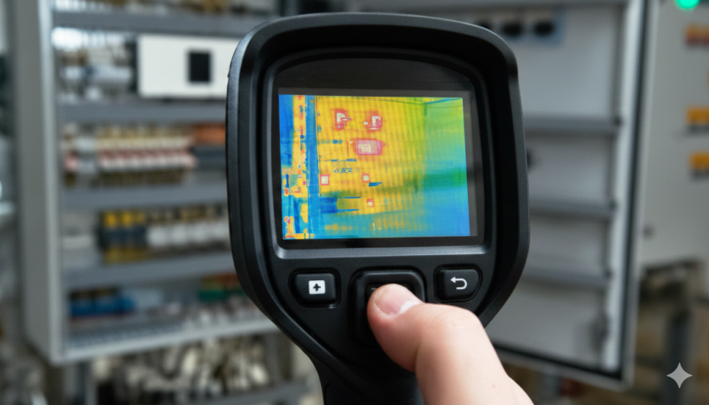
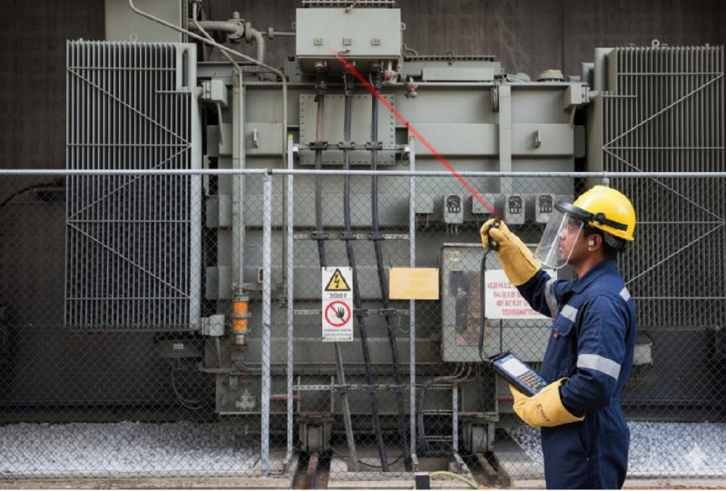
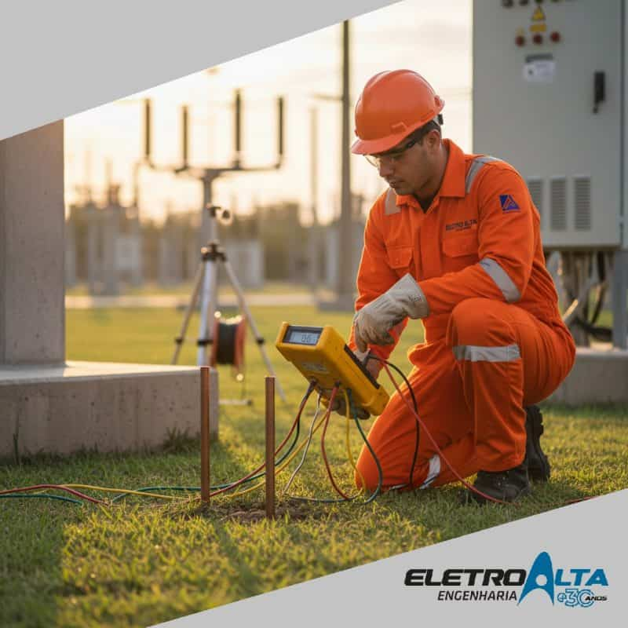
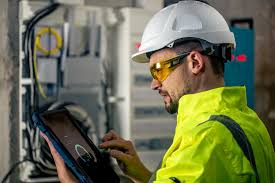

Manutenção elétrica deixou de ser prática recomendada — em qualquer padrão internacional de referência, é obrigação documentada
Manutenção Preventiva e Inspeções – A confiabilidade de instalações elétricas industriais não nasce de inspeções isoladas nem de manutenção reativa. Ela é o resultado de um Programa de Manutenção Elétrica (EMP) estruturado, documentado e auditável — exatamente o que a norma internacional de referência para o tema, a NFPA 70B, exige desde que deixou de ser uma recomendação e passou a ser um padrão de cumprimento obrigatório.
No Programa de Blindagem Energética® EletroAlta, essa exigência internacional se traduz em um sistema de proteção da continuidade operacional — atuando antes da falha, antes do acidente e antes da perda financeira, com a mesma lógica de condição de manutenção adotada pelos padrões técnicos mais rigorosos do mundo.
O Que Mudou na Manutenção Elétrica Global — e Por Que Isso Importa Para Sua Operação
Manutenção Preventiva e Inspeções – Por décadas, a manutenção elétrica industrial foi tratada como boa prática — recomendável, mas não exigível. Isso mudou. A NFPA 70B, principal referência internacional em manutenção de equipamentos elétricos, deixou de ser uma prática recomendada e passou a ser um padrão normativo, com linguagem de obrigação (“deve”) no lugar de sugestão (“deveria”). Autoridades regulatórias, seguradoras e departamentos jurídicos passaram a ter uma base objetiva para avaliar se um programa de manutenção elétrica é ou não tecnicamente defensável.
Na edição mais recente da norma, o escopo foi ampliado para tratar manutenção preditiva e corretiva de forma integrada — não apenas preventiva —, reforçando o projeto de equipamentos e processos que eliminem ou reduzam a exposição ao risco durante a própria atividade de manutenção. Também foi reforçado o alinhamento com a norma de segurança no trabalho elétrico (equivalente conceitual à nossa NR-10) e, pela primeira vez, a cibersegurança de sistemas operacionais passou a integrar formalmente o programa de manutenção elétrica — reconhecendo que ativos elétricos industriais modernos são também ativos digitais.
Leitura estratégica para a diretoria: um programa de manutenção que não documenta condição de manutenção, criticidade e ambiente operacional não é apenas tecnicamente incompleto — é uma lacuna de governança que se torna visível exatamente no pior momento: durante uma perícia, uma auditoria de seguro ou a investigação de um acidente.
O Conceito Central: Condição de Manutenção (Condition of Maintenance)
O núcleo técnico do padrão internacional não é uma lista genérica de tarefas — é uma metodologia de avaliação de risco aplicada a cada ativo elétrico individualmente. Três fatores determinam a frequência de manutenção exigida para cada equipamento:
- Condição física do equipamento — estado real observado (não presumido) do ativo.
- Criticidade operacional — o impacto de uma falha desse ativo específico na continuidade do processo produtivo.
- Ambiente operacional — exposição a poeira, umidade, temperatura, vibração e demais fatores que aceleram degradação.
Cada fator recebe uma classificação de severidade, e o fator mais crítico entre os três é o que determina o intervalo de manutenção do equipamento — não a média, não o mais favorável. Um transformador em excelente estado físico, mas operando em ambiente agressivo e crítico para o processo, deve ser tratado com a mesma rigidez de intervalo de um equipamento fisicamente degradado.
Essa é a diferença entre um plano de manutenção genérico (calendário fixo, igual para toda a planta) e um programa de manutenção elétrica tecnicamente defensável, com rastreabilidade de por que cada ativo tem o intervalo que tem.
O Que Um Programa de Manutenção Elétrica (EMP) Precisa Documentar
Alinhado à referência internacional, um EMP tecnicamente completo — e é isso que a EletroAlta estrutura dentro da Blindagem Energética® — precisa conter, no mínimo:
- Um programa de segurança elétrica que trate explicitamente a condição de manutenção como variável de risco.
- Definição clara de responsáveis por cada etapa do programa, com competência técnica formal.
- Levantamento e análise do sistema elétrico para priorização de ativos críticos.
- Procedimentos de manutenção documentados por tipo de equipamento.
- Plano de inspeções, ensaios e serviços com intervalos justificados tecnicamente.
- Política de documentação e retenção de registros de manutenção, ensaios e histórico por ativo.
- Medidas corretivas prescritas, documentadas e implementadas a partir dos dados coletados.
Isso é o que transforma um relatório de manutenção em documento de engenharia tecnicamente defensável — apto a sustentar auditoria, perícia, avaliação de seguro e decisão executiva, e não apenas um registro operacional arquivado.
Manutenção Planejada vs. Manutenção Reativa: Onde Está o Risco Real
Instalações elétricas raramente falham de forma súbita. Aquecimento anormal em conexões, descargas parciais, ruído ultrassônico e degradação progressiva de isolação são sinais mensuráveis que precedem a falha — quando há engenharia estruturada para interpretá-los.
Quando a manutenção planejada é negligenciada, a operação passa a viver em regime de exceção: a falha, quando ocorre, exige intervenção sob pressão operacional e psicológica, aumentando a exposição de eletricistas a partes energizadas e a probabilidade de desvio de procedimento de segurança. Esse é o mecanismo técnico por trás de um dado que sustenta tanto a NR-10 quanto os padrões internacionais de manutenção: falha não planejada não é apenas mais cara — é estruturalmente mais perigosa que manutenção planejada.
Como a EletroAlta Aplica Essa Metodologia — Blindagem Energética®
A EletroAlta não atua com inspeções isoladas nem com calendário genérico de manutenção. A aplicação da lógica de condição de manutenção, criticidade e ambiente operacional se dá por meio de:
1. Levantamento e Classificação de Ativos por Criticidade
Mapeamento técnico de cada ativo elétrico da planta, com classificação individual de condição física, criticidade para o processo e ambiente operacional — a base de qualquer intervalo de manutenção tecnicamente justificável.
2. Termografia Infravermelha
Identificação de pontos quentes, conexões defeituosas e sobrecargas sem interromper a operação — um dos principais métodos de ensaio preditivo reconhecidos internacionalmente.
3. Inspeções por Ultrassom
Detecção antecipada de descargas parciais e arcos elétricos incipientes — falhas frequentemente invisíveis à termografia isolada.
4. Medições Elétricas e de Campo
Avaliação de grandezas elétricas e campos eletromagnéticos com dado real, eliminando suposição sobre condição operacional.
5. Comissionamento e Ajuste de Relés de Proteção
Verificação funcional de seletividade e atuação — uma proteção que não atua corretamente não protege ninguém, independentemente do quanto o resto do sistema esteja bem mantido.
6. Retrofit Técnico
Atualização de sistemas obsoletos para eliminar não conformidade estrutural que nenhuma rotina de manutenção resolve isoladamente.
7. Documentação com Responsabilidade Técnica Formal
Todo o histórico de condição, ensaio e intervenção é registrado com rastreabilidade e ART — o mesmo padrão de documentação exigido pela referência internacional em manutenção elétrica.
→ Solicitar Diagnóstico Técnico de Confiabilidade
Avalie a Confiabilidade da Sua Instalação Elétrica
Fale com um engenheiro da EletroAlta e receba:
- Diagnóstico técnico da instalação com classificação de criticidade por ativo
- Identificação de riscos ocultos e pontos críticos
- Plano de ação preventivo e priorizado, tecnicamente rastreável
→ Solicitar Diagnóstico Técnico de Confiabilidade
Blindagem Energética aplicada à Continuidade Operacional
Engenharia preditiva para redução de downtime, proteção de ativos críticos e previsibilidade operacional
A manutenção preventiva elétrica é a confiabilidade das instalações elétricas não é fruto de manutenção pontual, nem de inspeções isoladas.
Ela é resultado de engenharia estruturada, gestão de risco elétrico e decisões executivas sustentadas por dados técnicos confiáveis.
No Programa de Blindagem Energética EletroAlta®, a manutenção elétrica evolui para um sistema de proteção da continuidade do negócio, atuando antes da falha, antes do acidente e antes do impacto financeiro.
Antecipe o arco elétrico antes que ele se torne um sinistro
Instalações Elétricas Avisam Antes de Falhar
Elas avisam — quando alguém sabe ouvir
Falhas elétricas raramente acontecem de forma súbita.
Esse comportamento não é coincidência, nem “sorte”.
Instalações elétricas saudáveis manifestam sinais — desde aquecimento anormal até descargas parciais — que podem ser interpretados por engenharia estruturada e preditiva.
Instalações elétricas dão sinais claros de degradação ao longo do tempo, como:
- Aquecimento anormal em conexões e componentes
- Descargas parciais, ruídos ultrassônicos
- Envelhecimento e degradação de sistemas de isolação
- Desvios operacionais e sobrecargas recorrentes
O problema não é a ausência de sinais — é a falta de escuta técnica estruturada.
A EletroAlta Engenharia transforma a manutenção elétrica em uma estratégia de confiabilidade, atuando antes da falha, com método de engenharia, tecnologia preditiva e responsabilidade técnica formal.
Confiabilidade elétrica é decisão de diretoria — não apenas de manutenção
Confiabilidade elétrica não se alcança apenas com execução técnica;
ela é consequência de decisões fundadas em engenharia, rígido controle de risco e responsabilidade corporativa rastreável.
Em falhas elétricas graves, a responsabilidade não é apenas técnica.
Decisões como:
- Não priorizar correções críticas
- Adiar investimentos técnicos
- Operar sistemas degradados
- Manter proteções desajustadas
são tecnicamente rastreáveis e possuem reflexos jurídicos, financeiros e corporativos.
Por isso, confiabilidade elétrica não é uma tarefa operacional.
Ela é uma decisão estratégica sustentada por engenharia.
O Impacto Real das Falhas Não Planejadas
Quando a falha ocorre, o impacto é sempre maior do que o investimento preventivo:
- Paradas inesperadas (downtime) e perda direta de faturamento
- Queima de painéis, transformadores e sistemas de automação
- Aumento do risco de acidentes elétricos e eventos graves
- Custos corretivos e emergenciais significativamente mais elevados.
Além do impacto imediato, falhas elétricas recorrentes corroem silenciosamente indicadores financeiros, reduzem a previsibilidade orçamentária e fragilizam a confiança da diretoria na estabilidade da operação.
Esses efeitos raramente aparecem de forma isolada;
eles se acumulam até se manifestarem como eventos críticos.
Toda falha não planejada funciona como um imposto invisível sobre a operação industrial.
A Solução EletroAlta: Confiabilidade com Previsibilidade
Blindagem Energética® aplicada à confiabilidade elétrica
A EletroAlta não atua com inspeções isoladas.
Atuamos com controle estruturado do risco elétrico, orientado à continuidade operacional.
Nossa solução integra:
- Manutenção preventiva e preditiva orientada por dados
- Inspeções avançadas por termografia infravermelha e ultrassom
- Medições de campo elétrico, magnético e parâmetros operacionais
- Avaliação técnica de subestações, cabines primárias e painéis
- Comissionamento e ajuste de relés de proteção
- Retrofit técnico de sistemas obsoletos
- Gestão rastreável do risco elétrico conforme NR-10
O resultado é previsibilidade, disponibilidade e proteção do negócio com a manutenção preventiva elétrica.
“Confiabilidade elétrica não é ausência de falhas.
É a capacidade de impedir que elas se tornem eventos críticos.”
— Eng. Glauber Maurin EletroAlta Engenharia
Autor: O Sistema Nervoso Industrial – Gestão Estratégica de Ativos Elétricos e Continuidade do Negócio
Como atuamos: Engenharia Preditiva aplicada à Blindagem Energética
1. Termografia Infravermelha
Identificação de pontos quentes, conexões defeituosas e sobrecargas sem desligar a operação, preservando produção e segurança.

2. Inspeções por Ultrassom
Detecção antecipada de descargas parciais e arcos elétricos incipientes, falhas invisíveis à termografia e extremamente perigosas.

3. Medições Elétricas e de Campo
Avaliação técnica de grandezas elétricas, campos eletromagnéticos e condições reais de operação, eliminando suposições e achismos.

4. Comissionamento e Ajuste de Relés de Proteção
Verificação funcional, testes e ajustes de relés, garantindo:
- Atuação correta
- Seletividade
- Eliminação rápida de falhas
- Redução do risco de arco elétrico
Proteções que não atuam corretamente não protegem ninguém.
5. Manutenção Preventiva em Subestações
Atuação técnica em cabines primárias, equipamentos de manobra e sistemas de proteção, assegurando confiabilidade e segurança ao longo do tempo como manutenção preventiva elétrica.
6. Retrofit Técnico de Sistemas Elétricos
Atualização de sistemas obsoletos para:
- Adequação normativa
- Aumento da segurança
- Eliminação de falhas recorrentes
- Confiabilidade de longo prazo
Benefícios Diretos para a Operação
- Aumento considerável da segurança de quem trabalha com as instalações elétricas
- Aumento consistente da disponibilidade operacional (KPI crítico)
- Redução drástica de paradas não planejadas
- Maior previsibilidade de manutenção e orçamento
- Redução de custos corretivos e emergenciais
- Controle efetivo e documentado do risco elétrico.
O Diferencial EletroAlta: Engenharia com Responsabilidade
A EletroAlta atua como engenharia parceira da confiabilidade, não como prestadora pontual de serviços:
- Mais de 30 anos de experiência em engenharia elétrica industrial
- Engenheiros com ART e responsabilidade técnica formal
- Métodos alinhados às melhores práticas técnicas e normativas
- Atuação integrada à NR-10 e à gestão de riscos elétricos
- Relatórios técnicos claros, objetivos e tecnicamente defensáveis.
Esses relatórios de manutenção preventiva elétrica não são apenas registros operacionais.
São documentos de engenharia tecnicamente defensáveis, aptos a sustentar auditorias, avaliações de seguro, análises periciais e decisões executivas.

Medidas de Controle conforme a NR-10
👉 A manutenção preventiva e as inspeções das instalações elétricas configuram uma das mais eficazes medidas de controle coletivo previstas na NR-10.
Quando a engenharia preventiva é negligenciada, a organização passa a operar em regime de exceção,
transferindo o risco para pessoas, para a operação e para a decisão executiva.Isso ocorre porque, em situações de falha não planejada, os eletricistas passam a se expor a riscos elétricos com maior frequência e gravidade, uma vez que a imprevisibilidade do evento impõe condições adversas de trabalho.
Nessas circunstâncias, é comum que procedimentos de segurança não sejam seguidos integralmente, que haja exposição involuntária a partes energizadas e que os profissionais sejam submetidos a pressões psicológicas desnecessárias, agravando significativamente o risco de acidentes elétricos.
Esse cenário é substancialmente diferente daquele observado em uma manutenção preventiva planejada, na qual os riscos são previamente identificados, avaliados e controlados, permitindo a adoção adequada de medidas de proteção coletiva, organização do trabalho e tomada de decisão técnica consciente.
— Eng Glauber Maurin | EletroAlta Engenharia | Livro: “O Sistema Nervoso Industrial – Gestão Estratégica de Ativos Elétricos e Continuidade do Negócio”
Avalie a Confiabilidade da Sua Instalação Elétrica
Fale com um engenheiro da EletroAlta e receba:
- Diagnóstico técnico da instalação
- Identificação de riscos ocultos e pontos críticos
- Plano de ação preventivo e priorizado
Transforme a manutenção elétrica em estratégia de negócio.
Perguntas Frequentes — Manutenção Preventiva Elétrica Industrial
Downtime elétrico não planejado é reduzido substituindo manutenção reativa por um programa estruturado de condição de manutenção: classificação de ativos por criticidade, inspeção preditiva (termografia e ultrassom), ensaios elétricos periódicos e comissionamento de proteções. A lógica central é agir sobre os sinais de degradação antes que se tornem falha — não sobre a falha já instalada.
É o programa documentado de manutenção elétrica exigido pela referência internacional NFPA 70B. Define responsáveis, levantamento e priorização de ativos, procedimentos de manutenção por tipo de equipamento, plano de inspeções e ensaios, política de documentação e retenção de registros, e medidas corretivas rastreáveis a partir dos dados coletados.
Manutenção preventiva é baseada em intervalos definidos previamente (tempo ou uso), independente da condição real do ativo. Manutenção preditiva usa dados de condição — termografia, ultrassom, análise de vibração, medições elétricas — para intervir apenas quando há sinal real de degradação, otimizando recursos sem abrir mão de segurança.
O ensaio por ultrassom é indicado para detectar descargas parciais, arcos elétricos incipientes e vazamentos de corona — falhas que frequentemente não geram calor detectável por termografia na fase inicial. É especialmente relevante em painéis de média tensão, subestações e equipamentos com histórico de degradação de isolação, sendo recomendado como parte da rotina preditiva periódica, e não apenas em resposta a um problema já identificado.
A termografia infravermelha deve ser aplicada de forma periódica e planejada em painéis, quadros, conexões, transformadores e equipamentos de manobra, com a operação em carga — o aquecimento anormal só se manifesta sob condição real de operação. A frequência ideal depende da criticidade do ativo, do ambiente operacional e do histórico de ocorrências, não de um calendário genérico único para toda a planta.
O MTBF aumenta quando a manutenção deixa de ser reativa e passa a ser orientada por condição real do ativo: inspeção preditiva regular, correção de desvios antes da falha funcional, ajuste correto de proteções e eliminação de causas-raiz recorrentes (e não apenas seus sintomas). Ganhos de MTBF são consequência de disciplina de engenharia sustentada, não de uma ação isolada.
A criticidade é avaliada cruzando três fatores: o impacto da falha desse ativo específico na continuidade do processo produtivo, a condição física real observada no equipamento, e o ambiente operacional ao qual está exposto (temperatura, umidade, poeira, vibração). O fator de maior severidade entre os três — não a média — determina o nível de criticidade e, consequentemente, o intervalo de manutenção exigido.
A NFPA 70B é a principal referência internacional para manutenção de equipamentos elétricos, hoje um padrão de cumprimento obrigatório — não mais uma recomendação. Exige um Programa de Manutenção Elétrica documentado, avaliação de condição de manutenção por ativo, intervalos de manutenção justificados tecnicamente, responsáveis formalmente identificados e registro auditável de ensaios, inspeções e ações corretivas.
A NR-10 é a norma regulamentadora brasileira que trata da segurança em instalações e serviços em eletricidade, com força legal no Brasil. A NFPA 70B é uma referência técnica internacional específica de manutenção de equipamentos elétricos, sem força legal automática no Brasil, mas amplamente adotada por operações multinacionais como padrão de engenharia. As duas são complementares: a NR-10 estabelece a obrigação legal de segurança; a NFPA 70B detalha a metodologia técnica de manutenção que sustenta essa segurança na prática.
A priorização segue a classificação de criticidade de cada ativo — combinando impacto na produção, condição física e ambiente operacional — e não a ordem cronológica de instalação ou o menor custo de intervenção. Ativos cuja falha interrompe o processo produtivo ou expõe pessoas a risco elétrico direto devem ser tratados com prioridade máxima, independentemente de seu porte físico.
É o conceito técnico central da referência internacional de manutenção elétrica: o estado real de manutenção de um equipamento, avaliado objetivamente, e não presumido a partir da idade ou do fabricante. Equipamentos com condição de manutenção não estabelecida são tratados, para fins de segurança, como partes energizadas expostas — independentemente de estarem fisicamente protegidos.
Não existe periodicidade universal tecnicamente correta — a frequência de inspeção deve ser definida por ativo, a partir da sua condição física, criticidade operacional e ambiente de instalação, conforme a metodologia de condição de manutenção. Calendários fixos e idênticos para toda a planta, sem essa avaliação individual, são uma prática ultrapassada e tecnicamente frágil.
É a estratégia de manutenção que decide a intervenção a partir de dados reais de condição do ativo — termografia, ultrassom, análise elétrica — em vez de um intervalo de tempo fixo. É a base técnica da manutenção preditiva e o modelo priorizado pelas referências internacionais mais recentes de manutenção elétrica.
Os principais sinais mensuráveis são: aquecimento anormal em conexões e componentes, descargas parciais e ruído ultrassônico, degradação progressiva da isolação elétrica, e desvios operacionais recorrentes como sobrecargas. Nenhum desses sinais surge de forma súbita — todos são detectáveis por engenharia preditiva estruturada antes de se tornarem falha.
É o modelo técnico que descreve o intervalo entre o momento em que uma falha potencial se torna detectável (P) e o momento em que ela se torna uma falha funcional real (F). Esse intervalo é o que define a janela de oportunidade para inspeção preditiva — quanto mais cedo no intervalo P-F a falha é detectada, maior o tempo disponível para intervenção planejada, sem impacto na operação.
Painéis e quadros de distribuição, transformadores, subestações e cabines primárias, motores de grande porte e relés de proteção concentram o maior risco combinado de criticidade operacional e severidade de falha, e por isso costumam ocupar o topo de qualquer matriz de priorização tecnicamente construída — sempre condicionado à avaliação real de cada planta, não a uma lista genérica.
Um programa de manutenção elétrica documentado e auditável é a evidência técnica que sustenta, perante seguradoras e em eventual perícia, que a organização adotou medidas de controle de risco tecnicamente reconhecidas. A ausência dessa documentação transforma decisões operacionais — como adiar uma correção crítica — em fragilidade jurídica e financeira rastreável, independentemente da intenção por trás da decisão.
Retrofit elétrico é a atualização técnica de sistemas e equipamentos obsoletos para adequação normativa, aumento de segurança e eliminação de falhas recorrentes que nenhuma rotina de manutenção resolve isoladamente. É necessário quando a condição de manutenção de um ativo revela degradação estrutural, e não apenas desgaste pontual corrigível por manutenção convencional.
Um programa auditável registra, por ativo: histórico de condição de manutenção, resultados de ensaios e inspeções, responsáveis técnicos por cada intervenção, e ações corretivas tomadas a partir dos dados coletados — com rastreabilidade e responsabilidade técnica formal (ART). Isso transforma o registro de manutenção em documento de engenharia defensável, e não em anotação operacional dispersa.
A Anotação de Responsabilidade Técnica formaliza a autoria e a responsabilidade profissional sobre o diagnóstico, os critérios de criticidade adotados e as recomendações técnicas emitidas. Isso é o que diferencia um laudo de manutenção tecnicamente defensável — apto a sustentar decisão executiva, auditoria e perícia — de um relatório operacional sem responsabilidade técnica formal atribuída.
Avalie agora a confiabilidade da sua instalação elétrica.
Fale com um engenheiro da EletroAlta e receba:
Diagnóstico técnico da instalação
Identificação de riscos ocultos.
Plano de ação preventivo.
 Clique aqui para solicitar o Diagnóstico Técnico de Confiabilidade
Clique aqui para solicitar o Diagnóstico Técnico de ConfiabilidadeTransforme a manutenção em estratégia de negócio.